6월, 꽃 피는 나무 10종과 푸른 잎으로 노는 하루
삼육대학교는 서울권 대학 중 손꼽히는 자연 캠퍼스입니다. 진입로의 적송·떡갈나무 터널을 지나면 200여 그루의 나무로 둘러싸인 제명호수가 나타나죠. 오늘은 이 숲길을 걸으며 ① 나무를 분류하는 눈을 기르고, ② 나무의 생태를 이해하고, ③ 6월에 꽃 피는 나무 10종을 만나고, ④ 푸른 나뭇잎으로 직접 놀아 봅니다.
침엽수/활엽수, 잎차례, 잎 모양으로 나무를 나누는 기준을 배웁니다.
잎의 광합성, 꽃-열매-씨앗, 곤충·새와의 관계를 살펴봅니다.
지금 꽃 피는 나무 10종을 직접 보고 향기 맡고 만져 봅니다.
잎맥 탁본, 자연물 빙고, 잎 분류 등 손으로 노는 활동.
물가 식생과 숲의 물 순환, 생물 다양성을 관찰합니다.
'내 나무 정하기'로 자연과 친구가 되어 마무리합니다.
"이건 무슨 나무예요?"라는 질문에 답하기 전에, 나무를 나누는 기준을 먼저 익히면 처음 보는 나무도 스스로 추리할 수 있습니다.
바늘처럼 뾰족하면 침엽수(소나무·적송), 넓적하면 활엽수(산딸나무·층층나무).
겨울에도 잎이 푸르면 상록수(소나무·사철나무), 잎을 떨구면 낙엽수.
줄기에 잎이 마주 보면 마주나기(산딸나무·층층나무·이팝나무), 어긋나면 어긋나기(때죽나무·밤나무).
잎 한 장이면 홑잎, 여러 작은 잎이면 겹잎(자귀나무·모감주나무). 가장자리에 톱니가 있는지도 단서!
분류가 '나누기'라면, 생태는 '관계 보기'입니다. 나무 한 그루가 햇빛·물·곤충·새와 어떻게 얽혀 사는지 이야기로 풀어 줍니다.
푸른 잎은 햇빛·물·이산화탄소로 양분을 만들고 산소를 내보냅니다(광합성). 6월의 잎이 가장 진하고 빽빽한 이유예요.
6월의 꽃은 곧 열매가 되려는 약속. 벌·나비가 꽃가루를 옮겨 주어야 씨앗이 생깁니다.
나무는 꿀과 향기를 주고, 곤충은 꽃가루받이를 돕습니다. 때죽나무·아까시나무는 대표적인 밀원(蜜源).
산딸나무·층층나무 열매는 새의 먹이가 되고, 새는 씨앗을 멀리 퍼뜨려 줍니다.
뿌리는 빗물을 머금어 제명호수를 채우고, 잎은 수분을 내뿜어 숲을 시원하게 합니다.
떨어진 잎은 미생물이 분해해 흙이 되고, 다시 나무의 양분이 됩니다. 끝없는 순환이죠.
제목을 눌러 펼쳐 보세요. 각 나무의 과(科) 분류 · 잎차례 · 꽃 · 관찰 포인트를 담았습니다. 서로 다른 8개 과에서 골라, 분류 수업과도 자연스럽게 이어집니다.
흰 '꽃잎'처럼 보이는 십자 모양 네 장은 사실 잎이 변한 포(苞)이고, 진짜 꽃은 그 가운데 작게 모여 있습니다. 가을엔 딸기 닮은 붉은 열매가 달려요.
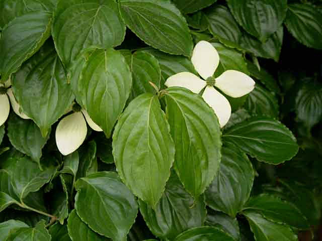
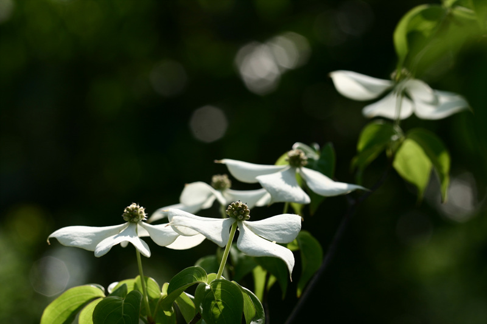
5~6월, 종처럼 생긴 흰 꽃이 모두 아래를 향해 조롱조롱 매달립니다. 나무 아래에서 올려다보면 꽃술까지 또렷이 보여요. 제주에선 '종낭'이라 부릅니다.
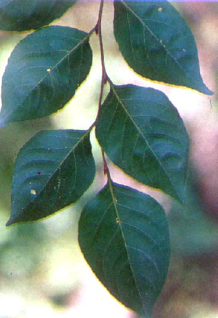
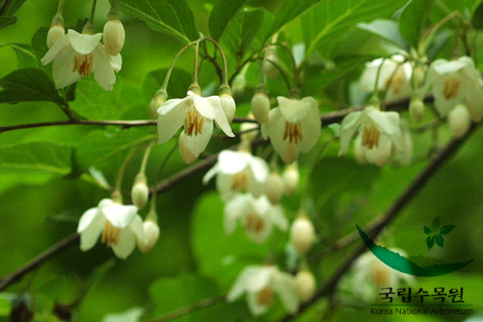
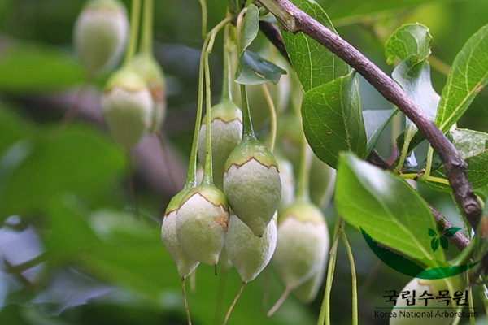
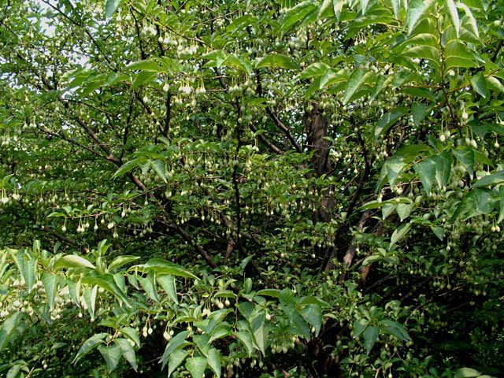
때죽나무의 사촌. 잎이 손바닥처럼 크고 둥글며, 흰 꽃이 긴 송이로 주렁주렁 달립니다. 때죽나무와 나란히 두고 '닮은 점·다른 점'을 비교하기 좋아요.
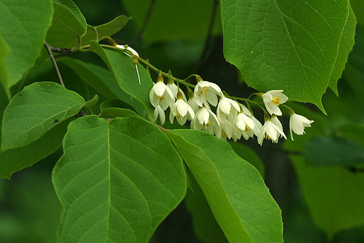
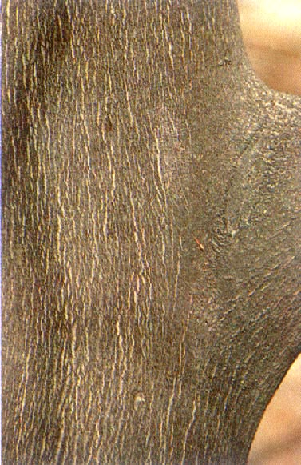
'산목련'이라고도 불리는 6월의 순백 신부. 목련 무리 중 잎이 다 자란 뒤에 꽃이 피고, 꽃이 아래를 향해 수줍게 고개를 숙입니다. 붉은 꽃밥이 포인트.
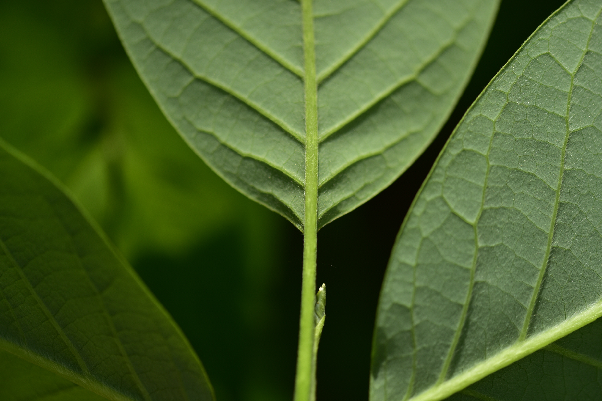
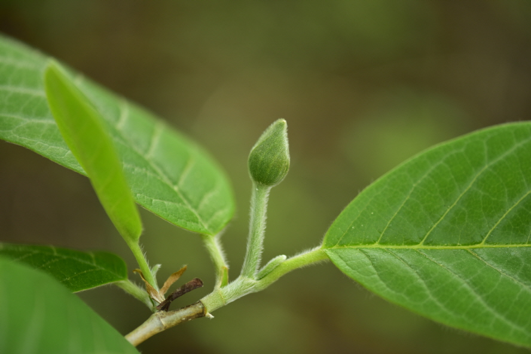
가지가 계단처럼 층층이 돌려 나서 멀리서도 알아봅니다. 5~6월 흰 꽃이 우산살처럼 펼쳐 피고, 산딸나무와 같은 과라서 잎맥이 닮았어요.
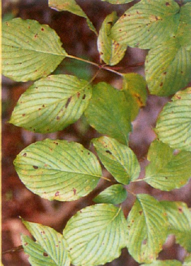
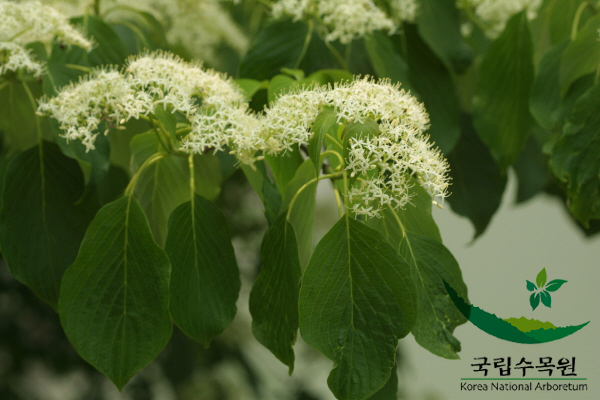
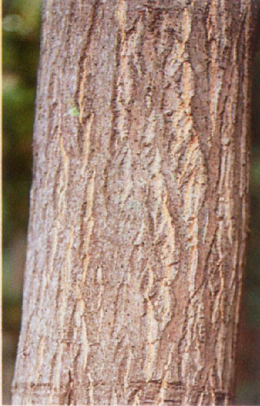
나무 가득 핀 흰 꽃이 쌀밥(이밥)을 수북이 얹은 듯하다 해서 이팝나무. 5~6월 초까지 2주간 피며, 가느다란 네 갈래 꽃잎이 특징입니다.
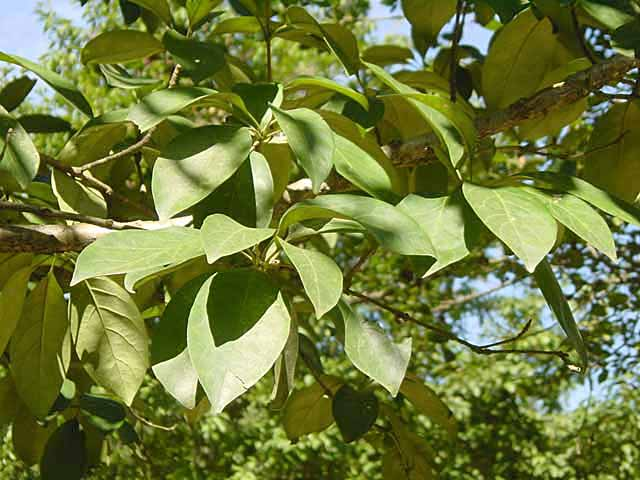
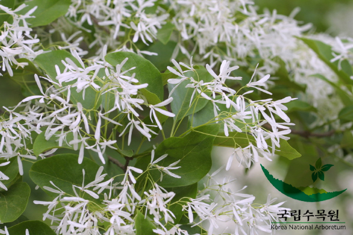
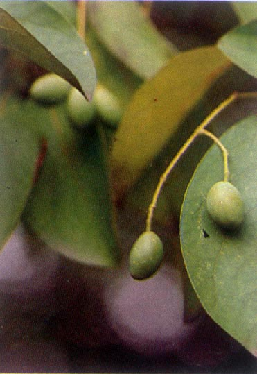
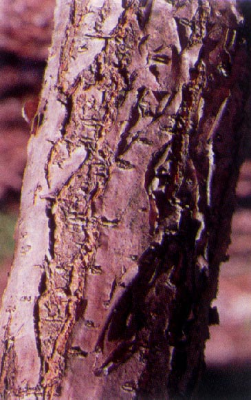
6월이면 길쭉한 꼬리 모양 꽃이삭이 나무를 덮고 특유의 강한 향기가 납니다. 가을 밤송이의 가시는 씨앗(밤)을 지키는 갑옷이에요.
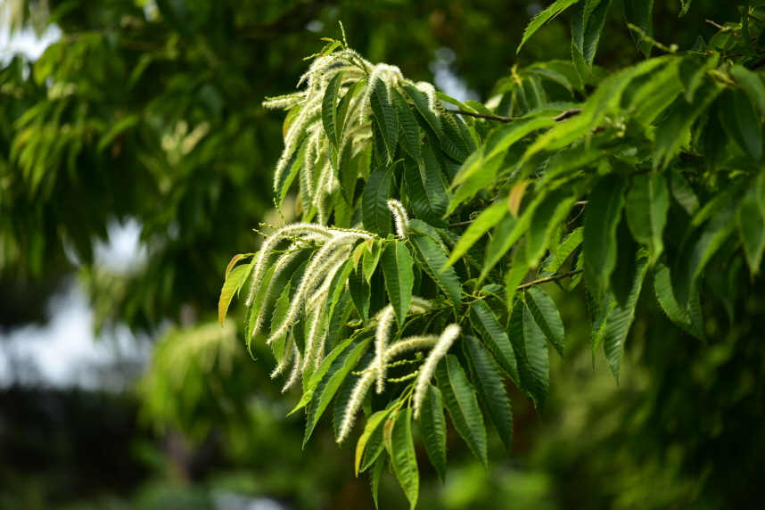
분홍 솔(부채)처럼 펼쳐지는 꽃이 6~7월에 핍니다. 작은 잎이 깃털처럼 모인 겹잎이고, 밤이 되면 잎을 마주 접어 '잠'을 자는 수면운동을 합니다.
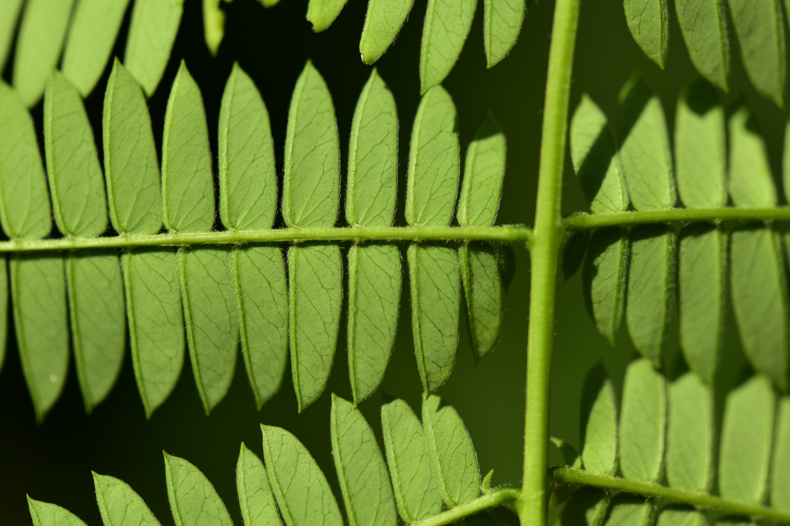
6~7월 노란 꽃이 원뿔 모양으로 무리 지어 피어 '황금비'라 불립니다. 꽃이 진 뒤 꽈리(꽈리등) 같은 열매가 달리고, 안의 검은 씨는 염주로 씁니다.
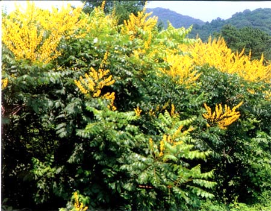
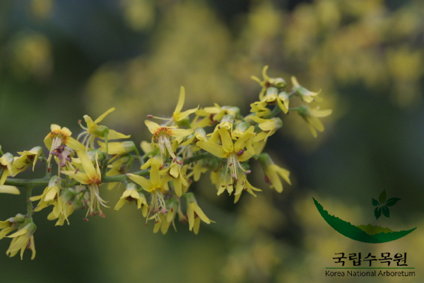
6~7월 동백을 닮은 흰 꽃이 한 송이씩 곱게 핍니다. 매끈한 줄기에 사슴 무늬(얼룩)가 있어 '비단나무'라 불릴 만큼 수피가 아름다워요.
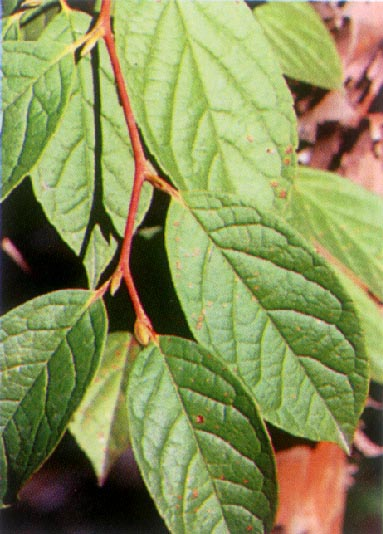
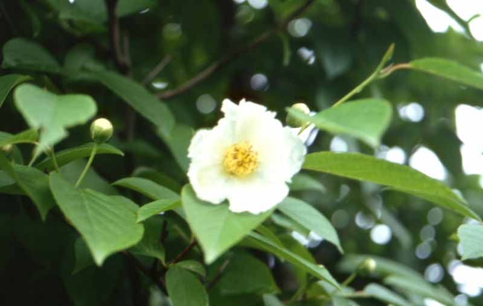
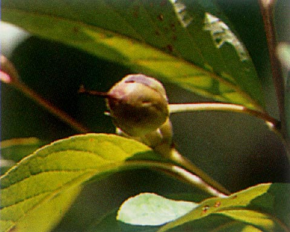
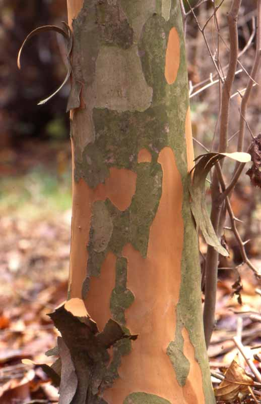
※ 개화 시기는 그해 날씨와 지역에 따라 1~2주 앞뒤로 달라질 수 있어요. 답사 전 현장의 개화 상태를 미리 확인하세요.
📷 사진 출처: 국립수목원 국가생물종지식정보시스템(촬영자 국립수목원, 공공저작물). 각 카드의 "도감에서 더 보기" 링크에서 원본과 추가 부위 사진(잎·꽃·열매·줄기 등)을 보실 수 있습니다. 일부 종은 도감에 등록된 부위 사진만 표시됩니다.
6월의 잎은 가장 푸르고 단단합니다. 떨어진 잎·여분의 잎만 활용하고, 살아 있는 가지는 꺾지 않는 것이 첫 번째 약속이에요. 🌿
잎 뒷면을 위로 놓고 얇은 종이를 덮은 뒤 색연필로 살살 문지르면 잎맥이 그대로 떠올라요.
관찰미술'뾰족한 잎·둥근 잎·톱니 잎·향기 나는 잎' 9칸을 채우며 숲을 탐색. 한 줄 완성 시 빙고!
탐색분류모은 잎을 마주나기/어긋나기, 톱니/매끈으로 나눠 보며 오늘 배운 '분류의 눈'을 직접 적용.
분류사고력해설사가 잎 한 장을 보여 주면, 숲에서 같은 나무의 잎을 찾아오는 짝 맞추기 술래잡기.
관찰신체띠 종이에 잎을 붙여 '숲의 왕관'을 만들기. 내가 고른 잎으로 나만의 자연 장신구 완성.
미술표현둘이 잎을 들고 가위바위보, 진 사람이 잎 가장자리를 한 번 접기. 잎이 먼저 다 접히면 승부! (떨어진 잎 사용)
놀이교감삼육대학교는 재림교회가 세운 학교입니다. 화잇 여사는 "천연계는 위대한 교과서"라고 했고, 예수님도 호숫가와 수풀에서 가르치셨습니다(실물교훈 24쪽). 오늘 제명호수 둘레숲의 나무·꽃·푸른 잎을 분류하고 관찰한 그 자리에서, 같은 자연이 들려주는 성경의 말씀과 예언의 신 기별을 함께 묵상합니다. 모든 본문은 재림마을에서 직접 확인한 원문입니다.
"이 점에 있어서 천연계는 해설자(解說者)를 필요로 한다."
엘렌 G. 화잇, 『교육』 제4장 「천연계의 가르침」, 101쪽화잇 여사는 자연이 스스로 다 말해 주지 못하므로 해설하는 사람이 필요하다고 했습니다. 오늘 우리가 하는 숲해설이 바로 그 일 — "세계는 교과서요 인생은 학교"(『교육』 100쪽)가 되도록 자연의 언어를 풀어 주는 것입니다.
"땅은 풀과 씨 맺는 채소와 각기 종류대로 씨 가진 열매 맺는 나무를 내라 하시니 그대로 되어 … 하나님이 보시기에 좋았더라" 창세기 1:11–12 (개역개정)
"실로 천연계는 위대한 교과서이므로 우리는 이 책을 성경과 연관시켜서 … 하나님의 품성을 가르쳐 주(어야 한다)." 엘렌 G. 화잇, 『실물교훈』 제1장, 24쪽
"아직 책을 읽는다든지 교실에서 공부할 수 없는 어린이들에게 있어서, 만물은 끝없는 교훈과 기쁨의 원천이 된다." 엘렌 G. 화잇, 『교육』 제4장, 100쪽
"그는 시냇가에 심은 나무가 철을 따라 열매를 맺으며 그 잎사귀가 마르지 아니함 같으니 그가 하는 모든 일이 다 형통하리로다" 시편 1:3 (개역개정)
"그는 우리가 피어나는 모든 백합화와 뾰족뾰족 싹트는 모든 풀잎사귀에서 이같은 기별을 찾아내어 읽기를 바라신다." 엘렌 G. 화잇, 『실물교훈』 제1장, 19쪽
"'하나님은 곧 사랑이시라'는 문구는 … 돋아나는 풀싹마다 기록되었다. 잎이 청청하게 무성한 수풀의 교목(喬木)들, 이 모든 것은 우리 하나님의 … 권고(眷顧)를 증거하는 것이다." 엘렌 G. 화잇, 『정로의 계단』 제1장, 10쪽
"들의 백합화가 어떻게 자라는가 생각하여 보라 수고도 아니하고 길쌈도 아니하느니라 … 솔로몬의 모든 영광으로도 입은 것이 이 꽃 하나만 같지 못하였느니라" 마태복음 6:28–29 (개역개정)
"예수께서는 아름다운 백합화를 꺾어서 어린이들과 청소년들의 손에 쥐어 주(셨다.)" — 자연의 꽃 한 송이로 하늘 아버지의 돌보심을 가르치심. 엘렌 G. 화잇, 『실물교훈』 제1장, 19쪽
"겨자씨 한 알과 같으니 … 심긴 후에는 자라서 모든 풀보다 커지며 큰 가지를 내나니 공중의 새들이 그 그늘에 깃들일 만큼 되느니라" 마가복음 4:31–32 (개역개정)
"씨 가운데 있는 배종(胚種)은 하나님께서 그 속에 넣어 주신 생명력의 전개로 말미암아 자라나는 것이지 사람의 힘으로 자라는 것이 아니다." 엘렌 G. 화잇, 『실물교훈』 제5장, 77쪽
"모든 초목과 꽃들은 … 하나님께서 … 공급하시는 것을 받음으로 자라난다. 초목이나 어린 아이는 … 공기, 일광, 영양으로 말미암아 자라난다." 엘렌 G. 화잇, 『정로의 계단』 제8장, 68쪽 (잎의 광합성과 연결)
"산들과 언덕들이 너희 앞에서 노래를 발하고 들의 모든 나무가 손뼉을 칠 것이며" 이사야 55:12 (개역개정)
"우리는 구주의 비유를 그가 말씀하신 현장, 곧 푸른 하늘 아래 펼쳐진 들과 숲과 풀과 꽃들 사이에서 연구하여야 한다." 엘렌 G. 화잇, 『실물교훈』 제1장, 26쪽
"강 좌우에 생명나무가 있어 … 그 나무 잎사귀들은 만국을 치료하기 위하여 있더라" 요한계시록 22:2 (개역개정)
"천연계의 미 그 자체가 우리의 심령을 죄와 세속적 매력에서 떠나게 하여 순결함과 화평함을 추구하게 하고 하나님께로 돌아가도록 인도한다." 엘렌 G. 화잇, 『실물교훈』 제1장, 24쪽
"천연계와 계시(성경)는 둘 다 하나님의 사랑을 증거한다." 엘렌 G. 화잇, 『정로의 계단』 제1장, 9쪽
실제 캠퍼스 배치(공식 캠퍼스맵 건물 좌표 기반)에 숲해설 동선을 얹었습니다. 화랑로 정문에서 소나무 숲길을 지나 캠퍼스 서북쪽 끝 제명호수(하트모양 인공호수)를 끼고 돌아 전망 포인트까지, 4개 정류장을 잇습니다. 번호는 아래 '해설 시나리오' 단계와 그대로 이어집니다.
※ 녹색 점은 실제 건물 위치(공식 캠퍼스맵 카카오맵 좌표 투영, 북쪽 위), 진한 점·이름은 주요 건물입니다. 제명호수는 캠퍼스 서북쪽 끝에 있습니다. 호수 모양·동선은 도보 이해용 표현입니다. 전체 건물 안내는 삼육대학교 공식 캠퍼스맵 참고.
도입 → 전개 → 마무리의 3단계로, 약 90~120분 코스. 제명호수를 한 바퀴 도는 동선과 맞물립니다.
눌러서 체크하며 챙겨 보세요.